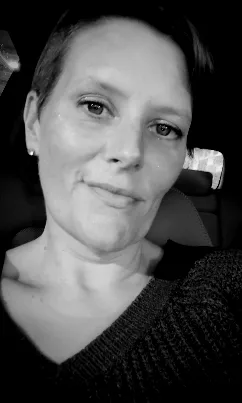

Women's Voices SWFL is a non-partisan grassroots movement made up of Floridians who are dedicated to defending civil liberties and reproductive freedoms.
Our Team

Director of Initiative Strategies
Kimberly Cox
Director of Digital Outreach
Danielle Robbins
Vice President
Kate Danehy-Samitz
Director of Community Outreach
Kaitlin Porter
President
Sarah Parker
Our Endorsements
Women's Voices
SWFL
Women’s Voices of SWFL understands the importance of electing strong leaders to our government. We are proud to endorse the following candidates.
Carlos Guillermo Smith
Allison Miller
Daniel Kuether
Michele Rayner Goolsby
Anna Eskamani
Fentrice Driskell
Mission Statement
To empower people within our communities through education, outreach, and activism.
Women's Voices
SWFL
Non-Negotiables Principles
Women’s Voices of SWFL operates on the following set of ethics and standards.
01
Black Lives Matter. We make and protect spaces for Black and Brown voices, and advocate for marginalized communities.
02
We are a non-partisan and non-denominational grassroots movement, and we maintain a safe environment for people of all ages, creeds, religions, and political affiliations to have a voice.
03
All pronouns are honored and welcome. While we call ourselves “Women’s Voices,” we recognize and welcome the voices of anyone affected by discriminatory legislation, including Transgender, Disabled, and Non-binary communities.
04
Civil discourse is healthy and different opinions are expected. We do not take disagreements personally and allow them to divert us from our goals. We remember that perspective comes from lived experience, and we strive to understand one another.
05
Our foremost priority is the defense of personal freedoms, accessible reproductive healthcare, and contraceptive resources. After these rights are secured, we will broaden the scope of our efforts.
Do your views align with our goals? SWFL invites you to join our mission. Click ‘Get Involved’ below to submit a membership application.
Interested in learning about our upcoming events? We believe that community outreach and civic engagement are imperative to reaching our goals. Click ‘Upcoming Events’ below to see what we have planned in the near future.
Looking to donate? The contributions from our doners support our work within the community. Please consider clicking ‘Support Us’ below to donate to one of our initiatives.
Thank You!
To All of Our Sponsors, Volunteers, and Supporters:
Women’s Voices of SWFL would like to express our sincere gratitude for your contributions. Your support has been paramount to our mission, and we are so appreciative of your generosity and dedication.